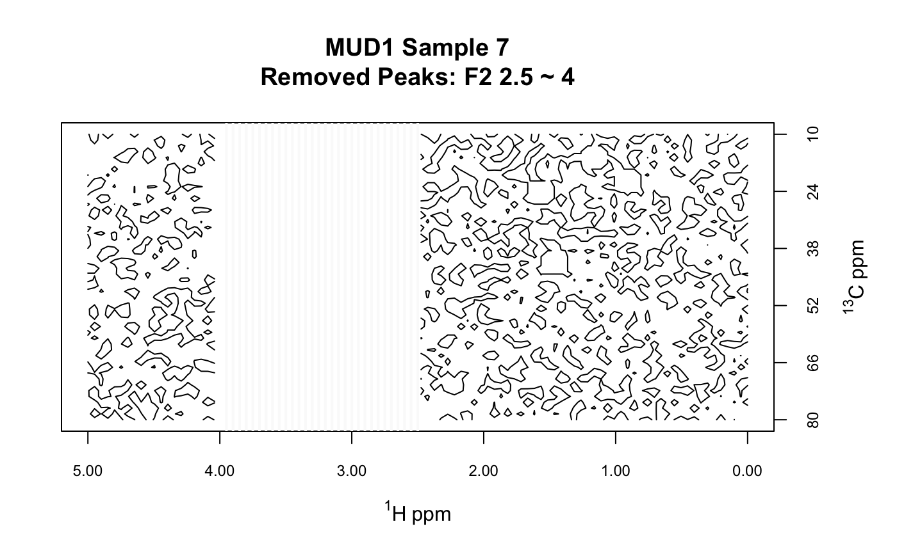
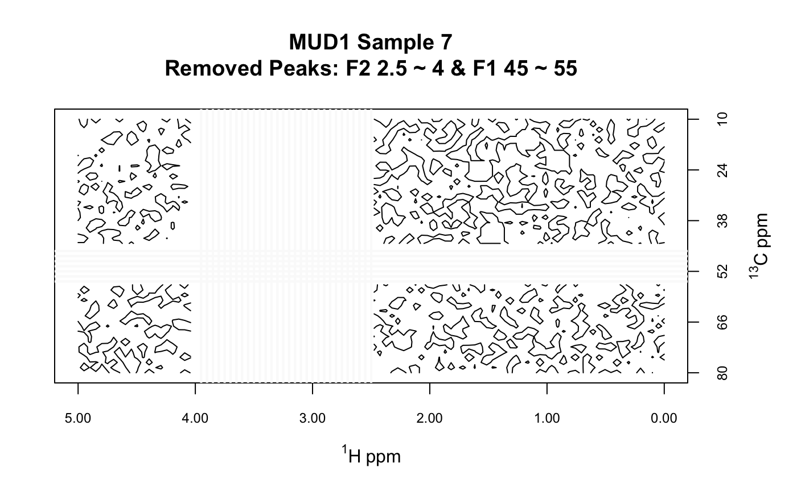

This function sets peaks at specified frequencies in a Spectra2D
object to NA. This effectively removes these peaks from calculations of
contours which can speed things up and clarifies the visual presentation of data.
This function is useful for removing regions with large
interfering peaks (e.g. the water peak in 1H NMR), or regions that are primarily
noise. This function leaves the frequency axes intact. Note that the
parafac function does not allow NA
in the input data matrices. See removeFreq for a way to shrink
the data set without introducing NAs.
removePeaks2D(spectra, remF2 = NULL, remF1 = NULL)
| spectra | An object of S3 class |
|---|---|
| remF2 | A formula giving the range of frequencies to be set to |
| remF1 | As for |
An object of S3 class Spectra2D.
# Note we will set contours a bit low to better # show what is going on. data(MUD1) mylvls <- seq(-0.3, 0.3, 0.1) mylvls[4] <- 0.05 plotSpectra2D(MUD1, which = 7, lvls = mylvls, main = "MUD1 Sample 7: Complete Data Set")#> #> MUD1: HSQC-like data for ChemoSpec2D demo & testing #> #> There are 10 spectra in this set. #> #> The F2 dimension runs from 0 to 10 ppm #> and there are 51 data points. #> #> The F1 dimension runs from 10 to 30 ppm #> and there are 41 slices. #> #> NAs were found in the data matrices. To see where, use plotSpectra2D. #> #> The spectra are divided into 2 groups: #> #> group no. color #> 1 GroupA 5 red #> 2 GroupB 5 blue #> #> #> *** Note: this is an S3 object #> of class 'Spectra2D'#> #> MUD1: HSQC-like data for ChemoSpec2D demo & testing #> #> There are 10 spectra in this set. #> #> The F2 dimension runs from 0 to 10 ppm #> and there are 51 data points. #> #> The F1 dimension runs from 10 to 30 ppm #> and there are 41 slices. #> #> NAs were found in the data matrices. To see where, use plotSpectra2D. #> #> The spectra are divided into 2 groups: #> #> group no. color #> 1 GroupA 5 red #> 2 GroupB 5 blue #> #> #> *** Note: this is an S3 object #> of class 'Spectra2D'#> #> MUD1: HSQC-like data for ChemoSpec2D demo & testing #> #> There are 10 spectra in this set. #> #> The F2 dimension runs from 0 to 10 ppm #> and there are 51 data points. #> #> The F1 dimension runs from 10 to 30 ppm #> and there are 41 slices. #> #> NAs were found in the data matrices. To see where, use plotSpectra2D. #> #> The spectra are divided into 2 groups: #> #> group no. color #> 1 GroupA 5 red #> 2 GroupB 5 blue #> #> #> *** Note: this is an S3 object #> of class 'Spectra2D'#> #> MUD1: HSQC-like data for ChemoSpec2D demo & testing #> #> There are 10 spectra in this set. #> #> The F2 dimension runs from 0 to 10 ppm #> and there are 51 data points. #> #> The F1 dimension runs from 10 to 30 ppm #> and there are 41 slices. #> #> NAs were found in the data matrices. To see where, use plotSpectra2D. #> #> The spectra are divided into 2 groups: #> #> group no. color #> 1 GroupA 5 red #> 2 GroupB 5 blue #> #> #> *** Note: this is an S3 object #> of class 'Spectra2D'plotSpectra2D(MUD1d, which = 7, lvls = mylvls, main = "MUD1 Sample 7\nRemoved Peaks: F2 2.5 ~ 4 & F1 17 ~ 20")